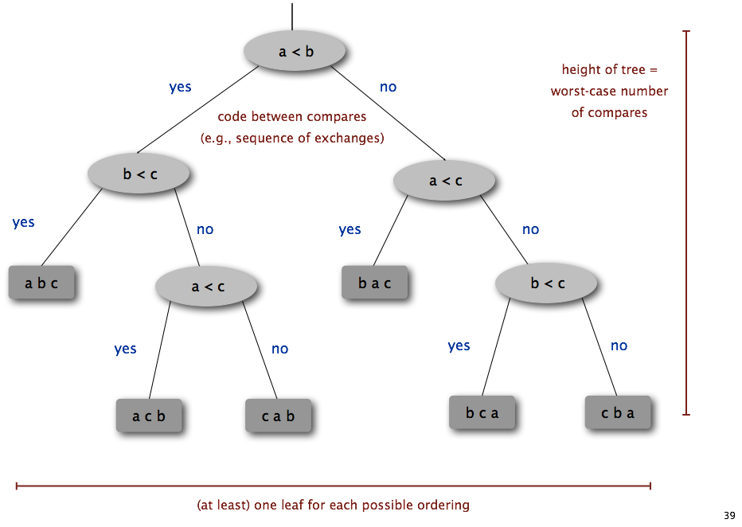
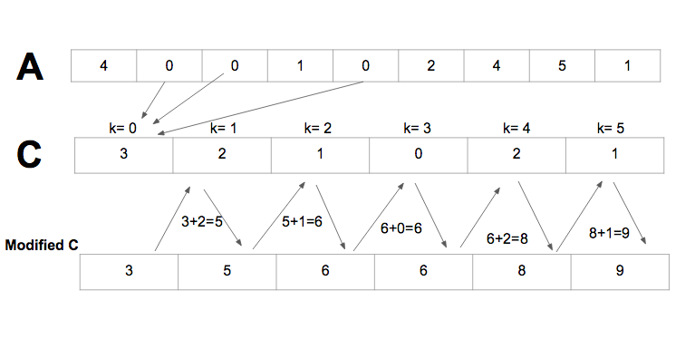
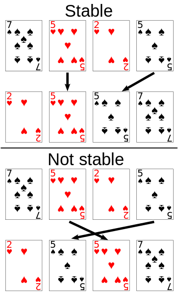
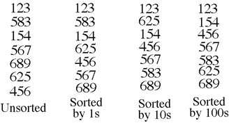
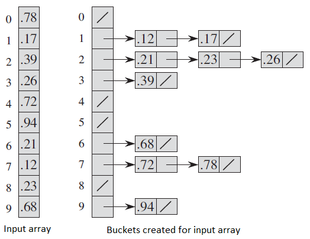

Sorting in linear time
Introduction to lower bounds
A lower bound is a limit to how fast a problem can be solved. For example, we can say that finding the maximum of an unsorted array has a lower bound of Ω(n), because no algorithm solves the problem faster (in the worst case).
Sorting decision tree. Source: cs.princeton.edu
Sorting lower bound
In a comparison sort, you can only use comparisons to determine the order of elements. Comparison sorting has a lower bound of Ω(nlogn).Proof
We can represent any comparison sort as a decision tree with n! leaves, where each leaf is a possible output of the algorithm (one of the n! possible permutations). We begin at the root, and each comparison determines which edge to follow. In the worst-case, the number of comparisons is the height of the tree, which is at least ceil(log(n!)) = Ω(nlogn).
We know that heapsort and mergesort have upper bounds of O(nlogn). Therefore heapsort and mergesort are asymptotically optimal, which means that their runtimes are within a constant factor of an optimal algorithm.
Proof that log(n!) = Ω(nlogn)
log(n!) = log(n * (n-1) * ... * 1)
log(n!) = log(n) + log(n-1) ... + log(1) (log of product = sum of logs)
log(n!) ≥ log(n) + ... + log(n/2) (throw out half the terms)
log(n!) ≥ (n/2) * log(n/2) (all remaining terms are at least log(n/2)
log(n!) ≥ (n/2) * (log(n) - 1)
log(n!) ≥ (nlogn)/2 - n/2
log(n!) = Ω(nlogn) (the n/2 term is less significant so it can be omitted)
If we allow other operations (e.g. arithmetic, or using an element as an array index), we can beat this lower bound in some situations.
Sample code
Sorting (counting sort, radix sort)
Counting sort

Counting sort. Source: brilliant.org
- Count the number of occurrences of each integer (use the element as an array index to update the count in constant time).
- Compute the number of elements less than or equal to each integer.
- Place each element in the correct spot of the output array. There may be duplicates, so decrement the counter each time.
Runtime
The first and third step each take O(n) time, and the second step takes O(k) time, so in total it takes O(n+k) time. If k is O(n), then it runs in O(n) time.
Radix sort

Stable sort. Source: wikipedia.org
- Sort by the least significant digit.
- ...
- Sort by the most significant digit.
Runtime
Suppose each number has d digits, and each digit has k possible values (k is the base).
We run counting sort d times, so the runtime is O(d(n+k)).
Note that d depends on k. Each digit consists of k bits, so if each number consists of b bits in total, then d = b/log(k).
We should choose k to minimize the runtime.
If b = O(logn), then choosing k = n gives us a runtime of O(n).

Radix sort in base 10. Source: cs.uah.edu/~rcoleman
Bucket sort

Bucket sort. Source: geeksforgeeks.org
- Divide the range into n equal-sized subintervals called buckets.
- Distribute the elements into the buckets.
- Sort each bucket and concatenate the buckets.